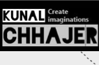
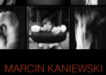
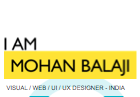
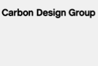

Michael Jihoon Sun
Cogs 187A | Winter 2012
All websites were viewed on January 18th, 2012
| Marco Rettore | Andreas Ovefelt | Kunal Chhajer | John Kavanagh | Mike Smith | Cristiana Bardeanu | Dereck Rushforth | Marcin Kaniewski | Mohan Balaji | Carbon Design Group | |
|---|---|---|---|---|---|---|---|---|---|---|
| Layout | Fixed Sidebar | Headline & Gallery | Featured Graphic | 3D Screenshots | Five Boxes | Advanced Grid | Featured/Full Screen Photo | Featured Photo Gallery | Featured Graphic with Headline & Gallery | Power Grid |
| Brand | Technical - Judging from the navigation bar alone, it's obvious that he's an artsy guy with graphic design skills. Recreational - With the amount of work he's presented, it's hard to tell which art pieces are from professional experience or leisure time. Either way, I get the feeling he could whip up some intricate graphics and have fun doing it. Clever - The distinct contrast between his art work and his minimalistic site layout allows his work to be the foreground of attention. |
Fun - Headline using a cool 3D image slider. Crafty - Gallery layout and her diverse taste in design almost makes it look like a really neat scrapbook. Dextrous - Great with a few tools instead of being just good with a lot of tools. |
Wacky - Front cover graphic shows creative art. Imaginitive - Definitely shows a certain type of personality. Quirky - Award winning graphics and designs that are far from the typical "designer's" web portfolio. |
Animated - A live background with cartoon animations. Childish - Live background makes me feel like I'm visiting a website for a movie trailer. Differing - It has the words, "I'm different!" written all over. |
Funky - Mike Smith, the designer, calls himself guerilla. Business - First thing I saw was, "Hire Me" Crafty - Mixture of photos and computer graphic design. |
Fun - Overall feel doesn't reside around business. Friendly - Colors and background images (flowers, leaves, apples) give it a pleasant feel Natural - Graphics and images are generally based off of nature, not so much digitized art. |
Experiential - Pictoral display of his own experiences. Vivid - Photos tell the story of an ex-Marine's memories Remote - His photos are from a country that's devistated from war. Most of us haven't experienced such living conditions, but his portfolio speaks with photos to make the viewer feel as if he/she were there. |
Professional - Clean and displays only a tile photos and contact info. Emotional - At first glimpse, a lot of the photos are close up shots of people with different facial expressions. Edgy - Clean typography that augments the photos. |
Technical - Showcases a lot of technical experience in web, logo, and flash design. Nerdy - His headline caption, "innovating new approaches to web". Atypical - The way he integrated different layouts makes it far from the typical portfolio. |
Orderly - Products and services are clearly depicted within the grid layout. Illustrative - Photos tell the story. Innovative - Minimalistic style with large photos and less content show they're more about work and less about talk. |
| Functionality | The site definitely shows off what needs to be shown, but may be lacking in additional context. Even physical art galleries provide a small description next to each piece; this website provides only a title. In addition to a very short description, I'd be curious to see what software/tools he used. | The home page gallery shows a snippet from each website and is linked directly to the website. There is a hover over effect over each image that displays sufficient information regarding the current status of the website and the tools used to create it. I'd say that her gallery provides sufficient information and is effective at getting its message across. | Although the page has several customized graphics throughout the home page, the horizontal navigation bar is easy to find at the top of the page. Unlike the other web portfolios, the portfolio content is an extra click away from the homepage. Wherever you go on the websie, you're only one subpage away from home and the consistent navigation bar makes it easy to browse through different pages. | The 3D slider effect is used to showcase his work, but the overall site is a little slow to load. Nothing really runs as smooth as you would expect. This obstructs its main goal in having a gallery that transitions smoothly between different pieces of work. | What I found a little strange about this website was that every image box on the front page loads to the same page and not the specific work it's previewing. He has a home page and work page, but the home page is simply a condensed, more interactive version of the work page. | There's a concise yet useful caption for each piece of work selected (client, services provided, skills). Although the portfolio displays work done for web design, you're able to get a pretty good first impression of each website. | One of the beauties of photography is that stories can be told visually through the use of awesome framing and context can be grasped through simply soaking in the image. This is basically a beautifully done slideshow of pictures that informs people of what's going on in a remote part of the world. | The portfolio effectively displays his large database of artwork by tiling up the photos. Unlike the last photo portfolio, this one has more pictures and is effectively condensed into scalable thumbnails. Context is limited to simple categories of photos that are selectable by either clicking on the navigation or the thumbnail images, making it easy to browse through his work. | He uses a mixture of layouts, consisting mainly of the featured graphic with headline and gallery. However, his gallery is modified so that it's only one column. This alone suppresses the ability to explore all of his work to get a general feel of what he does. | The site's purpose is to showcase their design efforts and to offer similar services to potential clients. A lot of their photos are edited to have short descriptions. For the photos that lack any sort of narrative, a hover over with additional information is presented and linked to a new page with plenty of specifics regarding the product. |
| Interactivity | Minimal use of javascript and no fancy interactive galleries, so the format and style does feel a little bit old school. There's no search bar wouldn't be able to search for specific content. Corresponding page on navigation bar is highlighted so you know exactly what you're looking at. Basically seems to have the bare necessities of interactivity for a clean and organized portfolio! | As mentioned previously in functionality and brand, javascript was used sparingly throughout the site to give it a modern, interactive feel. The additional context provided through the hover over eliminates the need for any secondary pages. | You can see glimpses of javascript used throughout the gallery page and the navigation bar. Each gallery thumbnail has a hover over/slider effect for a short description of each project. When a thumbnail is selected, a full-size gallery is presented via lightbox. It shows his work in high granularity, but the lack of interactivity for the lightbox previews make it hard to imagine playing with the website | Again, the 3D sliding effect is cool but there is no way of finding out how many projects he's done. The slider seems glitchy when I tried to quickly scroll through the gallery. Each piece of work is selectable with additional information and a more detailed picture. What's nice about this one compared the the last is that you have a direct link to the live work | The headline images move a little too quickly. He has a hover over effect for each selectable image that shades the image with a transparent layer lacking extra context. | Just like in Kunar's web portfolio, the navigation bar includes extra context by hovering over to guide the selection process. What makes this website different from others is that it doesn't use any lightbox effects to display images. The advanced grid layout allows for sufficient amount of supplemental information to be shown. | The content is presented using the jQuery fullscreen/supersized slideshow plugin and allows you to manually slide through photos. Judging from the fact that there's no way to make a thumbnail preview of all of the photos, the author of the photos probably wanted people to really engage in the heavy photographic content. | Focused content stays visible while the others fade into the dark background. You can choose categories of content by either clicking on the thumbnails or navigation. Both do the same thing using a jQuery plugin, making the processes of selecting and maximizing specific content an easy one. | There's a fixed sidebar when you scroll down a little bit and it basically becomes a featured graphic layout. Once you hit the bottom half of the website, he uses parts of the jQuery library to do a sort of automated scrolling effect. One aspect of interactivity that would have been nice to have could be to make the gallery items selectable with additional context. | The huge slideshow of photos depicting their recent accomplishments can be navigated automatically by waiting or manually by clicking. Just about every piece of selectable content on the website changes in color or form when you hover over it (not overwhelming, but enough to give subtle feedback). Images without a hover over are expanded with lightbox. |
| Navigation | All but one of the page categories on the navigation bar each showcase about twenty pieces of work. Once you select one piece, you can view the next one by clicking "next project" on top of the page. However, you can't skip through projects without having to click "next project" several times. Even still, there is no preview for other works and the only way to see what's up ahead is to take a step backwards by going back into the main gallery. | What's great about this site is that it only has one page to deal with. The content is divided linearly down the main page into 3 short sections that can be accessed through the navigation bar. Since there are less functions and no secondary pages, there is less complexity when dealing with the navigation. | It was pretty easy to navigate and explore the different pages on the website. He also provides captions for each item on the fixed navigation bar that clarifies what exactly the page is about, before you decide to leave your current page. | He showcases the portfolio content on the main page, which is typically what I've seen so far in all of the web portfolios. His contact page is a slightly opaque overlay effect and hovers over whatever page you're currently on, so you'll always know where you are. | A confusing aspect about the navigation was that every image preview on the home page lead to the same "work" page, even though the images preview different works (you'd expect the next page to be more information regarding that work, but that wasn't the case). | There is also a sort of stacked navigation bar for the portfolio section that allows for quick browsing without using any secondary windows. Live versions of the website can be viewed by clicking on the larger image, but it will result in you leaving the original page completely and hitting the back button on the browser. | Since the main content is through fullscreen photos, there is only one bit of short context that minimizes by clicking on it. Highly effective because the short description puts you in context and the large photos allow you to experience. This provides for a rather intuitive sense of navigation and non-cluttered presentation. | As mentioned in the description under interactivity, content is easily manipulable through the use of jQuery plugins. However, I got confused the first time because I selected a random thumbnail image and was wondering why the others disappeared. Then I noticed that this effect was analogous to selecting a menu item on the navigation bar. | Because this website is basically one and a half layouts stacked on top of one another and has three separate navigation bars, I was slightly confused as to which navigation bar would take me to a specific area of the website. Once you hit the second half of the website, you wonder why the other half is being restricted. Again, a smaller selectable thumbnail gallery with additional context could possibly make it easier to browse. | I found the website easy to navigate. However, one part that bothered me was the "View All" button under "Projects" and "News". Everything was already shown when selecting either of those sub-categories without having clicked "View All"; I even selected it a few times to see if I had looked past anything. |